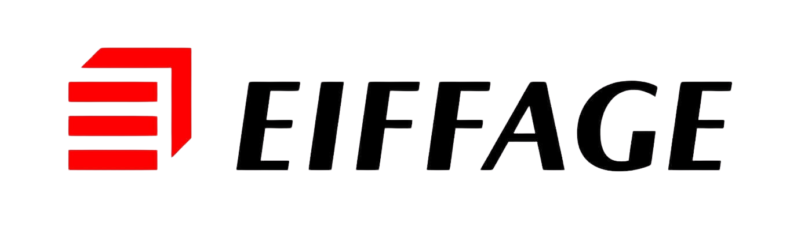
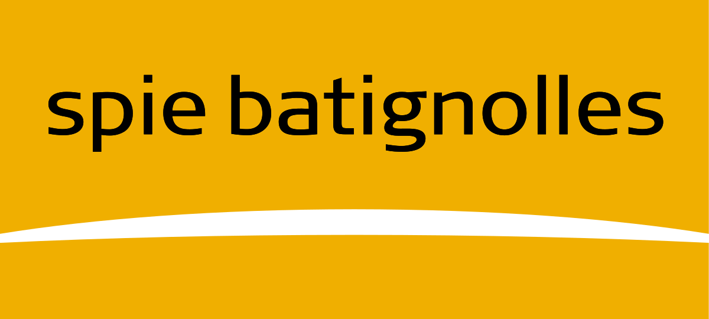
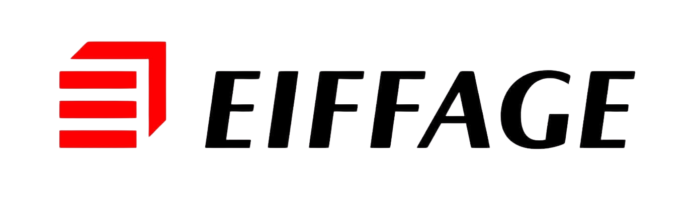
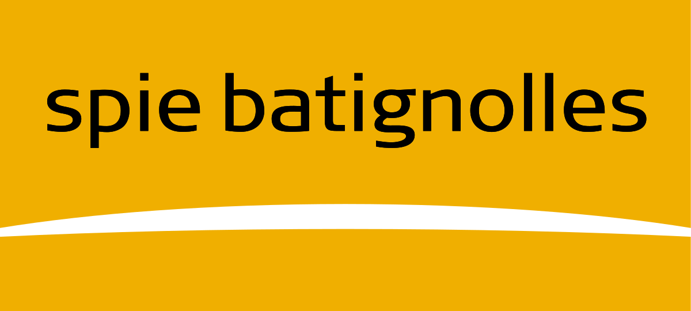

NOTRE HISTOIRE
C'est en décembre 2004 que David Peralta a créé Assainissement 81. Et depuis ce jour, Assainissement 81 s'est donné une mission simple : offrir un service d'assainissement fiable, réactif et accessible à tous.
Installée à Castres, l'entreprise compte aujourd'hui une flotte de 15 véhicules (dont 7 hydrocureurs allant de 3,5 tonnes à 26 tonnes).
Au fil des années, notre équipe s'est agrandie, notre matériel aussi, il s'est également modernisé, et notre expertise s'est renforcée. Aujourd'hui, nous intervenons dans tout le Tarn (81) pour répondre à tous les besoins (vidange de fosses, débouchage, inspection vidéo, travaux de nettoyage, travaux sur mesures ou encore location de WC autonomes).
Depuis le premier jour, nous sommes engagés dans le respect du client, le sens du service et l'engagement de résoudre chaque situation dans les meilleurs délais.
Nous assurons une disponibilité 24h/24, 7j/7 depuis le premier jour.


 


